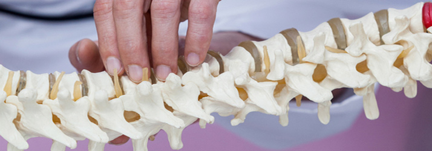

Articles & Resources
Plain-English reads
from Family Tree.
Short articles on what's actually going on in your body — and what to do about it.
Why Choose Chiropractic Care in Ephrata PA
Chiropractic treatment is a viable solution for many different health issues. Whether you have a bulging disc in your back, debilitating back pain, or you suffer from severe headaches…
Read Article →

Talking About Bulging Discs
Have you ever heard of a slipped disc? It's a misnomer. Discs never "slip" — but they can bulge.
Read Article →

Chiropractic Helps Auto Accident Patients
If you're ever unlucky enough to be injured in a car accident, you may experience a strain on your neck muscles and the surrounding soft tissue.
Read Article →
Chiropractic Care for Back Pain
Chiropractic care can diagnose and treat problems that affect the nerves, muscles, bones, and joints of your body.
Read Article →
Different Types of Headaches
There are many causes of headaches, and many types — but the most common headache treated by chiropractors is called the cervicogenic headache.
Read Article →
Why Injuries Respond to Chiropractic Care
No one ever plans to get injured, but injuries can happen at the spur of the moment and without warning.
Read Article →

Herniated Discs Explained
Herniated disc. Slipped disc. Bulging disc. Pinched nerve. You may have heard all these terms to describe severe pain felt in the back.
Read Article →
Proper Child Backpacks
Children grow so quickly. As they're growing, their bones and muscles are susceptible to temporary backaches, joint pain, and muscle strains.
Read Article →
Should Kids See a Chiropractor?
Many parents who want the best for their children's health are constantly looking for non-invasive ways to boost health and prevent degenerative conditions and pain.
Read Article →
The Value of Health
The human body is designed to naturally repair itself — but it's an ability that's dependent on a healthy nervous system.
Read Article →

Chiropractic Treatment for Car Accidents
If you're suffering from back or neck pain after even the most minor of car accidents, whiplash can lead to serious complications.
Read Article →
Sciatic Pain Helped by a Chiropractor
Sciatica is a condition that's often misdiagnosed and attributed to any intense lower back pain.
Read Article →
The Best Time to See a Chiropractor
Visiting a chiropractor isn't nearly as "alternative" as it used to be — and for good reason.
Read Article →
Poor Posture Can Be Improved
Poor posture is something that affects a large portion of the population and causes a host of different physical ailments.
Read Article →
Migraine Tips
If you're a migraine sufferer, you know just how painful and debilitating it can be when a migraine takes hold.
Read Article →
Time to Improve Your Health
Every year, hundreds — if not thousands — of people suffer some type of lower back injury.
Read Article →
3 Common Conditions Chiropractors Help
Chiropractors are capable of treating all types of injuries and recognize the unique situation that each case presents.
Read Article →
3 Tips from Your Chiropractor
Visit with purpose and exercise in between. Many people only visit a chiropractor because of an immediate need.
Read Article →
5 Reasons to Choose a Chiropractor
Our chiropractor can minimize stress and effectively correct desk-job injury, repetitive movement injury, or sports-related problems.
Read Article →

Are You Looking for a Chiropractor?
Many people only start looking for a chiropractor when the pain becomes unmanageable or chronic.
Read Article →
Back Pain Tips
Six tips from our chiropractor to avoid back pain — starting with regular exercise and proper form.
Read Article →
Car Accident Tips
Even accidents at low speed that cause minimal damage at the scene can be potentially harmful.
Read Article →
Talking About Headaches
Nine out of ten North Americans suffer from headaches — but most don't know what's actually causing them.
Read Article →
Chiropractors Have Extensive Schooling
Your chiropractor has been through an incredible amount of training — comparable to most other medical professions.
Read Article →
Athletes Improve with Chiropractic Care
"Chiropractic just makes you feel so much better. When I walk out of the clinic, I feel like I'm about three inches taller…" — Tom Brady.
Read Article →
A Word on Stretching
Chiropractic treatment includes guidance on stretching and movements to increase blood flow. Low-impact, no special equipment required.
Read Article →